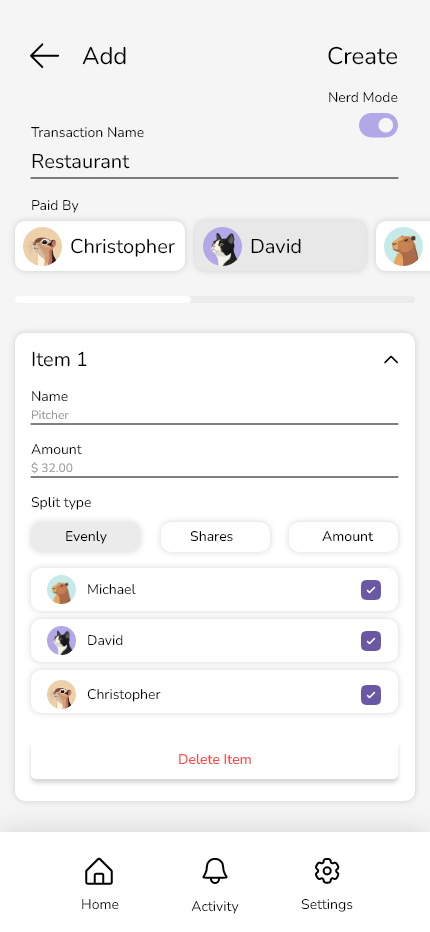
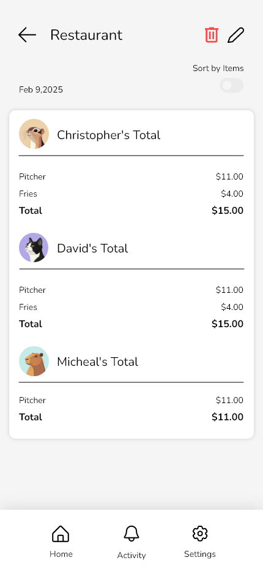
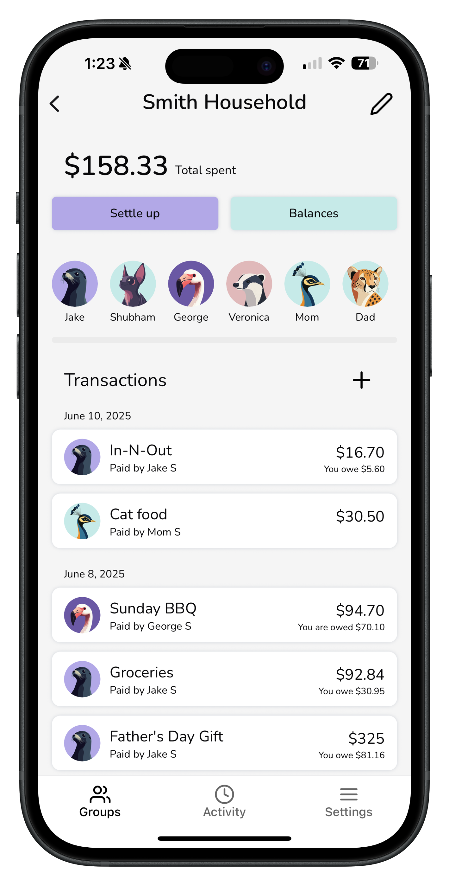
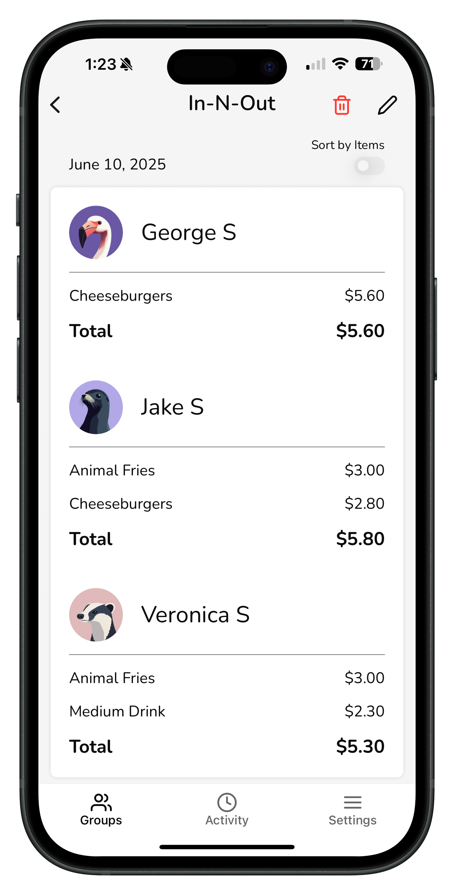
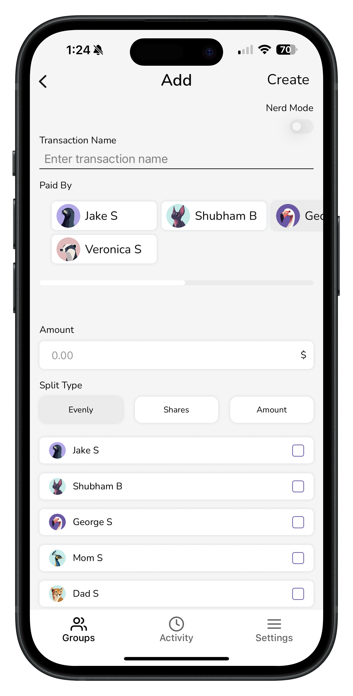
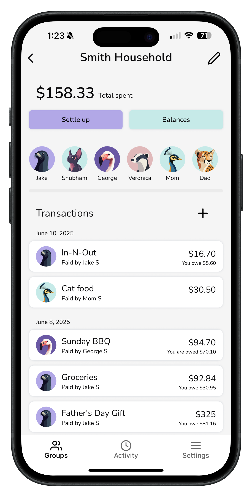
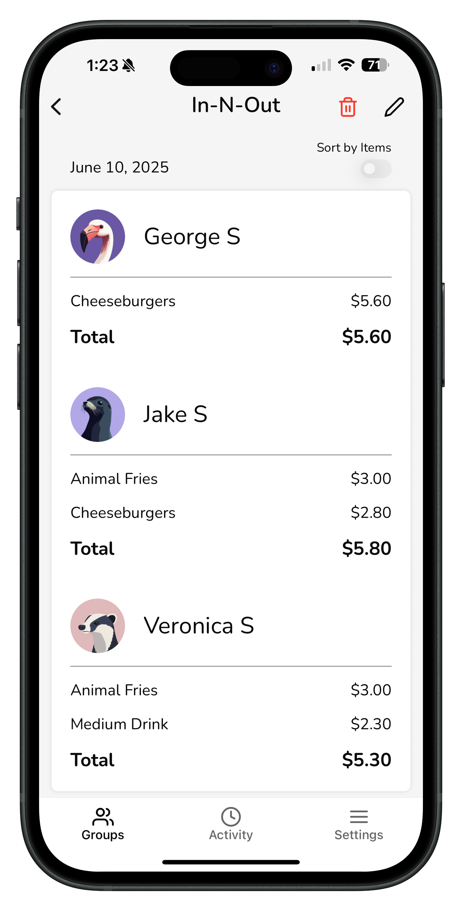
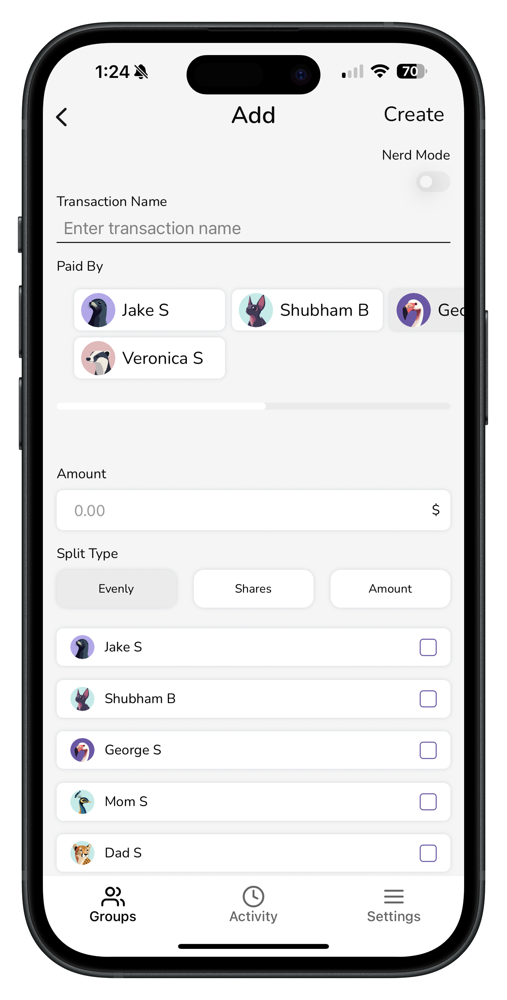

Key Features & Solutions
Groups and Transactions
Users can create groups for trips, roommates or shared events. Each group shows total spending, recent activity and the user's balance at a glance.
Transactions are easy to scan, with clear labels showing who paid and whether the user owes or is owed. This helps users understand their financial situation without digging through details.
Itemized Splitting
Dolo allows users to split expenses by individual items instead of only splitting totals evenly. This reflects real situations like restaurant bills or shared groceries where people pay different amounts.
Users can assign items to specific people and see totals update instantly, which reduces confusion and awkward follow-ups.



Balances and Settlement
Dolo shows clear balances for each group so users can easily see who owes and who is owed. Balances update automatically as transactions are added, helping users keep track without extra steps.
The settlement flow lets users record payments and close balances in a simple and straightforward way.
Anonymous Users
Dolo allows users to split expenses with people who do not have the app by adding them as anonymous users. These users can be included in transactions and itemized splits.
This makes the app easier to use in real situations like group dinners or trips where not everyone wants to download an app.
Visual Design
The interface uses soft colors, simple layouts and friendly avatars to make money management feel less stressful. Spacing and typography focus on clarity and readability.
 




